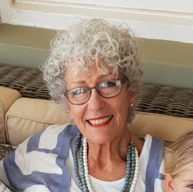

Song for a Century
{kind=link}

A hundred years after this building opened its doors, Winand Grundling sits down at its organ for an evening of music, song and a good deal of wit. He plays, and he talks you through what you are hearing. Soprano Annatjie Joubert joins him for the songs. Cheese and wine afterwards, and the proceeds go to the church's centenary fund.
Booking your seats
Four steps. NB: read step 3 carefully. Your seats are held as soon as the payment reflects.
Performers

Winand Grundling began organ studies with Colin Campbell in 2002, read for his BMus at Nelson Mandela Metropolitan University and took his BMus Hons cum laude at Stellenbosch University under Mario Nell. He holds Trinity and Unisa performance licentiates, both with distinction, and has studied at the Haarlem Organ Summer School, the Eastman School of Music and the Bach Academy in Amsterdam.
He is overall winner of the ABSA National Youth Music Competition and of the Unisa and SAKOV overseas bursary competitions, and holds three Kanna Awards: two in 2012 for 14 Stasies van die Kruis and one in 2015 for Bach-Vandag. Organist of the Dutch Reformed Church Stellenbosch-Welgelegen, he has played Organ Week at the Woordfees since 2015 and tours his comedy production, A Victor Borge Tribute.

Studied Music at Rhodes University where she was member and soloist of the Rhodes University Chamber Choir under Prof. Georg Gruber. Sang the role of Susanna in the University production of Le Nozze di Figaro with the Cape Town City Orchestra.
After her marriage to a Riversdale farmer, Geoffrey Joubert, she started singing lessons with Madame Adelheid Armhold in Cape Town. Later Prof. George van der Spuy in Stellenbosch, who encouraged her to take part in Masterclasses at Potchefstroom University under Prof. Blaschke from Germany. Masterclasses at Stellenbosch University under Prof. Schilavsky from Austria, whereafter she recorded a series of Lieder by various composers at the SABC for broadcasting, with Albie van Schalkwyk as accompanist.
Repertoire, apart from Lieder, includes arias from Oratorio, Opera, Operette, Musicals, Folksongs from different countries.
What you'll hear
Church
The congregation began in 1899 as a Presbyterian congregation, and became Stellenbosch United Church in 1990 when it united locally with the Uniting Congregational Church of Southern Africa. It is a multicultural congregation with two campuses, one in Stellenbosch and one in Kayamandi, which worship together through the year.
The building on Van Riebeeck Street has been its home for a century, and this concert closes the centenary year. What is raised goes to the church's centenary fund.
Alongside the Sunday services the congregation runs the Stellenbosch United Church Education Trust, founded in 2005 to mentor and support students who are the first in their family to study at a university.
8 Van Riebeeck Street
Church office 021 887 0495
Stellenbosch Central, 7600
Church office 021 887 0495
Office hours Mon-Fri, 07:30-12:30
stbuc.co.za

{kind=link}
Song for a Century
Honderd jaar nadat hierdie gebou sy deure oopgemaak het, gaan Winand Grundling agter sy orrel sit vir 'n aand van musiek, sang en 'n goeie skoot humor. Hy speel, en hy vertel jou wat jy hoor. Sopraan Annatjie Joubert sluit by hom aan vir die liedere. Kaas en wyn na afloop, en die opbrengs gaan aan die kerk se eeufeesfonds.
Hoe om te bespreek
Vier stappe. LW: lees stap 3 mooi deur. Jou plekke word gehou sodra die betaling reflekteer.
Kunstenaars
Winand Grundling het in 2002 onder Colin Campbell met orrelstudie begin, sy BMus aan die Nelson Mandela Metropolitaanse Universiteit verwerf en sy BMus Hons cum laude aan die Universiteit Stellenbosch onder Mario Nell voltooi. Hy het uitvoerende lisensiate van Trinity en Unisa, albei met onderskeiding, en het by die Haarlem Orrelsomerskool, die Eastman School of Music en die Bach-Akademie in Amsterdam studeer.
Hy is algehele wenner van die ABSA Nasionale Jeugmusiekkompetisie en van die Unisa- en SAKOV-oorsese beurskompetisies, en het drie Kanna-toekennings: twee in 2012 vir 14 Stasies van die Kruis en een in 2015 vir Bach-Vandag. Hy is orrelis van die NG Kerk Stellenbosch-Welgelegen, speel sedert 2015 Orrelweek by die Woordfees, en toer met sy komedieproduksie A Victor Borge Tribute.
Sy het Musiek aan Rhodes Universiteit studeer, waar sy lid en solis van die Rhodes University Chamber Choir onder prof. Georg Gruber was. Sy het die rol van Susanna gesing in die universiteit se produksie van Le Nozze di Figaro saam met die Cape Town City Orchestra.
Na haar troue met die Riversdal-boer Geoffrey Joubert het sy sanglesse by mevrou Adelheid Armhold in Kaapstad begin, en later by prof. George van der Spuy in Stellenbosch, wat haar aangemoedig het om aan meesterklasse aan die Potchefstroomse Universiteit onder prof. Blaschke van Duitsland deel te neem. Meesterklasse aan die Universiteit Stellenbosch onder prof. Schilavsky van Oostenryk het gevolg, waarna sy 'n reeks Liedere deur verskeie komponiste by die SAUK vir uitsaai opgeneem het, met Albie van Schalkwyk as begeleier.
Haar repertorium sluit, benewens Liedere, arias uit oratorium, opera, operette en musiekblyspele in, asook volksliedjies uit verskillende lande.
Wat jy gaan hoor
Kerk
Die gemeente het in 1899 as 'n Presbiteriaanse gemeente begin en het in 1990 Stellenbosch United Church geword met die plaaslike vereniging met die Uniting Congregational Church of Southern Africa. Dit is 'n multikulturele gemeente met twee kampusse, een in Stellenbosch en een in Kayamandi, wat deur die jaar saam aanbid.
Die gebou in Van Riebeeckstraat is al 'n eeu lank sy tuiste, en hierdie konsert sluit die eeufeesjaar af. Wat ingesamel word, gaan na die kerk se eeufeesfonds.
Naas die Sondagdienste bedryf die gemeente die Stellenbosch United Church Education Trust, in 2005 gestig om studente te ondersteun en te mentor wat die eerste in hul familie is om universiteit toe te gaan.
Van Riebeeckstraat 8
Kerkkantoor 021 887 0495
Stellenbosch-Sentraal, 7600
Kerkkantoor 021 887 0495
Kantoorure Ma-Vr, 07:30-12:30
stbuc.co.za